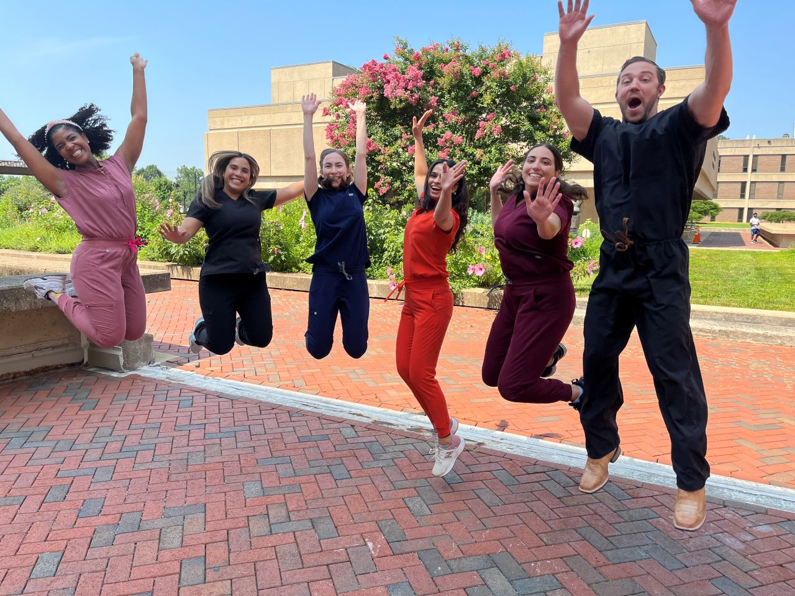

Welcome! View the menu items to find information about our fellowship program.


PUBLICATIONS BY FACULTY AND FELLOWS 2015-2023
Peer-reviewed articles, book chapters, books
2023
Narayanan I, Litch JA, Srinivas GL, Onwona-Agyeman K, Abdul-Mumin A, Ramasethu J. At-risk newborns: Overlooked in expansion from essential newborn care to small and sick newborn care in low- and middle-income countries. Glob Health Sci Pract. 2023;11(1): e2200099. doi:10.9745/GHSP-D-22-00099.
Peesay, M. Subramanyan, Siva. Alexander, Vana. Zanelli, Santina et al (2023, July 7). Extremely low birth weight infant. Overview, Morbidity and Mortality, Thermoregulation and Hypoglycemia. Medscape (retrieved Aug. 24, 2023).
2022
Kaushal S, Shah S, Sundararajan S, Bell KG, Jackson P, Aponte-Patel L, Sargent C, Muniz EI, Oghifobibi O, Kresch M, Brumberg H, Vuguin P. Pediatric research's societal commitment to diversity: a regional approach to an international crisis. ESPR DEI committee pre-conference session. Pediatr Res. 2022 Feb 28. doi: 10.1038/s41390-022-01991-3. PMID: 35228671
2021
Culjat M, Huizenga MN, Forcelli PA. Age-dependent anticonvulsant actions of perampanel and brivaracetam in the methyl-6,7-dimethoxy-4-ethyl-beta-carboline-3-carboxylate (DMCM) model of seizures in developing rats. Pharmacol Rep. 2021 Feb;73(1):296-302. doi: 10.1007/s43440-020-00189-w.
Choi HY, Corder W, Tefera E, Abubakar, KM. Comparison of Point-of-Care versus Central Laboratory Testing of Electrolytes, Hemoglobin, and Bilirubin in Neonates. Am J Perinatol. 2021 Mar 23. doi: 10.1055/s-0041-1726125.
Amenyogbe N, Adu-Gyasi D, Enuameh Y, Asante KP, Konadu DG, Kaali S, Dosoo D, Panigrahi P, Kollmann TR, Mohn WW, Owusu-Agyei S. Bacterial and Fungal Gut Community Dynamics Over the First 5 Years of Life in Predominantly Rural Communities in Ghana. Front Microbiol. 2021 Jul 6;12:664407. doi: 10.3389/fmicb.2021.664407.
Radtke MD, Poe M, Stookey J, Pitts SJ, Moran NE, Landry MJ, Rubin LP, Stage VC, Scherr RE. Recommendations for the use of the Veggie Meter for spectroscopy-based skin carotenoid measurements in the research setting, Curr Develop Nutr. 2021 Jul 29;5(8):nzab104. doi: 10.1093/cdn/nzab104
Kaushal S, Raju TK. Ischemic Perinatal stroke. The Handbook of Neonatology, 2nd edition, Indian Journal of Pediatrics, 2021.
Boardman J, Groves A, Ramasethu J. editors. Avery and MacDonald’s Neonatology. Pathophysiology and Management of the Newborn, 8th edition, Wolters Kluwer, Philadelphia, 2021.
Kamholz K and McGovern J. Care of the Normal Newborn, in Avery and MacDonald’s Neonatology. Pathophysiology and Management of the Newborn, 8th ed., edited by Boardman J, Groves A, Ramasethu J. Wolters Kluwer, Philadelphia, 2021.
2020
Wang X, Li Y, O'Brien KL, Madhi SA, Widdowson MA, Byass P, Omer SB, Abbas Q, Ali A, Amu A, Azziz-Baumgartner E, Bassat Q, Abdullah Brooks W, Chaves SS, Chung A, Cohen C, Echavarria M, Fasce RA, Gentile A, Gordon A, Groome M, Heikkinen T, Hirve S, Jara JH, Katz MA, Khuri-Bulos N, Krishnan A, de Leon O, Lucero MG, McCracken JP, Mira-Iglesias A, Moïsi JC, Munywoki PK, Ourohiré M, Polack FP, Rahi M, Rasmussen ZA, Rath BA, Saha SK, Simões EA, Sotomayor V, Thamthitiwat S, Treurnicht FK, Wamukoya M, Yoshida LM, Zar HJ, Campbell H, Nair H; Respiratory Virus Global Epidemiology Network. Global burden of respiratory infections associated with seasonal influenza in children under 5 years in 2018: a systematic review and modelling study. Lancet Glob Health. 2020 Apr;8(4):e497-e510. doi: 10.1016/S2214-109X(19)30545-5.
Lee NY, Kim Y, Kim YS, Shin JH, Rubin LP, Kim Y. β-Carotene exerts anti-colon cancer effects by regulating M2 macrophages and activated fibroblasts. J Nutr Biochem. 2020 Aug;82:108402. doi: 10.1016/j.jnutbio.2020.108402.
Ramasethu J. Prevention of Health Care–Associated Infections in the NICU. NeoReviews. 2020 Aug;21(8):e-546-e558. doi: 10.1542/neo.21-8-e546.
Chaudhry R, Bamola VD, Samanta P, Dubey D, Bahadur T, Chandan M, Tiwary S, Gahlowt A, Nair N, Kaur H, Passi C, Sharma A, Chandel DS, Panigrahi P. Immunoglobulin Receptors Expression in Indian Colon Cancer Patients and Healthy Subjects Using a Noninvasive Approach and Flowcytometry. Int J Appl Basic Med Res. Jul-Sep 2020;10(3):194-199. doi: 10.4103/ijabmr. IJABMR_191_19.
Wright ME, Yu AO, Marco ML, Panigrahi P. Genome Sequence of Lactiplantibacillus plantarum ATCC 202195, a Probiotic Strain That Reduces Sepsis and Other Infections during Early Infancy. Microbiol Resour Announc. 2020 Sep 24;9(39):e00741-20. doi: 10.1128/MRA.00741-20.
Rong Q, Abubakar K. A newborn with coronavirus (COVID-19) disease: A brief report. J Neonatal Perinatal Med. 2020;13(4):593-595. doi: 10.3233/NPM-200489.
Sinha S, Jit BP, Patro ARK, Ray A, Dehury S, Sahoo S, Behera RK, Mohanty PK, Panigrahi P, Das P. Influence of rs1042713 and rs1042714 polymorphisms of β2-adrenergic receptor gene with erythrocyte cAMP in sickle cell disease patients from Odisha State, India. Ann Hematol. 2020 Dec;99(12):2737-2745. doi: 10.1007/s00277-020-04254-5.
Ramasethu J and Seo S., editors. MacDonald’s Atlas of Procedures in Neonatology, 6th ed., Wolters Kluwer/ Lippincott, Williams & Wilkins, Philadelphia, 2020.
Ramasethu J, Seo S, Gupta A. Making Low-Cost Simulation Models for Neonatal Procedures, in MacDonald’s Atlas of Procedures in Neonatology, 6th ed., Wolters Kluwer/Lippincott, Williams & Wilkins, Philadelphia, 2020, pp. 28-33.
Kamholz K. Informed Consent for Procedures, in MacDonald’s Atlas of Procedures in Neonatology, 6th ed., Wolters Kluwer/Lippincott, Williams & Wilkins, Philadelphia, 2020, pp. 34-38.
Kuczkowski MM. Methods of Restraint, in MacDonald’s Atlas of Procedures in Neonatology, 6th ed., Wolters Kluwer/Lippincott, Williams & Wilkins, Philadelphia, 2020, pp. 46-51.
Choi HY. Aseptic Preparation, in MacDonald’s Atlas of Procedures in Neonatology, 6th ed., Wolters Kluwer/Lippincott, Williams & Wilkins, Philadelphia, 2020, pp. 52-58.
Abubakar MK. Cardiorespiratory Monitoring, in MacDonald’s Atlas of Procedures in Neonatology, 6th ed., Wolters Kluwer/Lippincott, Williams & Wilkins, Philadelphia, 2020, pp. 73-80.
Abubakar MK. Blood Pressure Monitoring, in MacDonald’s Atlas of Procedures in Neonatology, 6th ed., Wolters Kluwer/Lippincott, Williams & Wilkins, Philadelphia, 2020, pp. 81-90.
Abubakar MK. Continuous Blood Gas Monitoring, in MacDonald’s Atlas of Procedures in Neonatology, 6th ed., Wolters Kluwer/Lippincott, Williams & Wilkins, Philadelphia, 2020, pp. 91-100.
Abubakar MK. End-Tidal Carbon Dioxide Monitoring, in MacDonald’s Atlas of Procedures in Neonatology, 6th ed., Wolters Kluwer/Lippincott, Williams & Wilkins, Philadelphia, 2020, pp. 101-104.
Drumm C. Transcutaneous Bilirubin Monitoring, in MacDonald’s Atlas of Procedures in Neonatology, 6th ed., Wolters Kluwer/Lippincott, Williams & Wilkins, Philadelphia, 2020, pp. 105-109.
Seo S. Vessel Localization, in MacDonald’s Atlas of Procedures in Neonatology, 6th ed., Wolters Kluwer/Lippincott, Williams & Wilkins, Philadelphia, 2020, pp. 118-122.
Dave AM. Venipuncture, in MacDonald’s Atlas of Procedures in Neonatology, 6th ed., Wolters Kluwer/Lippincott, Williams & Wilkins, Philadelphia, 2020, pp. 123-128.
Dave AM. Arterial Puncture, in MacDonald’s Atlas of Procedures in Neonatology, 6th ed., Wolters Kluwer/Lippincott, Williams & Wilkins, Philadelphia, 2020, pp. 129-133.
Culjat M. Lumbar Puncture, in MacDonald’s Atlas of Procedures in Neonatology, 6th ed., Wolters Kluwer/Lippincott, Williams & Wilkins, Philadelphia, 2020, pp. 140-146.
Choi HY. Peripheral Intravenous Line Placement, in MacDonald’s Atlas of Procedures in Neonatology, 6th ed., Wolters Kluwer/Lippincott, Williams & Wilkins, Philadelphia, 2020, pp. 188-193.
Vaughan A, Choi HY. Management of Extravasation Injuries, in MacDonald’s Atlas of Procedures in Neonatology, 6th ed., Wolters Kluwer/Lippincott, Williams & Wilkins, Philadelphia, pp. 194-198.
Seo S. Umbilical Artery Catheterization, in MacDonald’s Atlas of Procedures in Neonatology, 6th ed., Wolters Kluwer/Lippincott, Williams & Wilkins, Philadelphia, pp. 199-216.
Seo S. Umbilical Vein Catheterization, in MacDonald’s Atlas of Procedures in Neonatology, 6th ed., Wolters Kluwer/Lippincott, Williams & Wilkins, Philadelphia, pp. 217-223.
Kaushal S, Ramasethu J. Peripheral Arterial Cannulation, in MacDonald’s Atlas of Procedures in Neonatology, 6th ed., Wolters Kluwer/Lippincott, Williams & Wilkins, Philadelphia, pp. 224-232.
Choi HY, Rivera A, Chachine AA. Central Venous Catheterization, in MacDonald’s Atlas of Procedures in Neonatology, 6th ed., Wolters Kluwer/Lippincott, Williams & Wilkins, Philadelphia, pp. 233-252.
Abubakar MK, Torres MB. Extracorporeal Membrane Oxygenation Cannulation and Decannulation, in MacDonald’s Atlas of Procedures in Neonatology, 6th ed., Wolters Kluwer/Lippincott, Williams & Wilkins, Philadelphia, pp. 253-264.
Kuczkowski MM, Milmoe GJ. Tracheostomy and Tracheostomy Care, in MacDonald’s Atlas of Procedures in Neonatology, 6th ed., Wolters Kluwer/Lippincott, Williams & Wilkins, Philadelphia, pp. 300-306.
Greenleaf AM. Gastric and Transpyloric Tubes, in MacDonald’s Atlas of Procedures in Neonatology, 6th ed., Wolters Kluwer/Lippincott, Williams & Wilkins, Philadelphia, 327-334.
Ramasethu J. Exchange Transfusions, in MacDonald’s Atlas of Procedures in Neonatology, 6th ed., Wolters Kluwer/Lippincott, Williams & Wilkins, Philadelphia, pp. 383-391.
Kaushal S, Ramasethu J. Phototherapy, in MacDonald’s Atlas of Procedures in Neonatology, 6th ed., Wolters Kluwer/Lippincott, Williams & Wilkins, Philadelphia, pp. 447-452.
2019
Drumm CM, Siddiqui JN, Desale S, Ramasethu J. Urinary Tract Infection Is Common in VLBW Infants. J Perinatol. 2019 Jan;39(1):80-85. doi: 10.1038/s41372-018-0226-4.
Francis F, Varankovich N, Brook B, Amenyogbe N, Ben-Othman R, Cai B, Harbeson D, Liu AC, Dai B, McErlane S, Andrews K, Kollmann TR, Panigrahi P. Probiotic Studies in Neonatal Mice Using Gavage. J Vis Exp. 2019 Jan 27;(143). doi: 10.3791/59074.
Scala M, Berg J, Keszler M, Abubakar K. Premature Infants Conceived with Assisted Reproductive Technology: An Analysis of Infant Morbidity, Compared with Infants Conceived Naturally. Am J Perinatol. 2019 Feb;36(3):258-261. doi: 10.1055/s-0038-1667288.
Narayanan I, Nsungwa-Sabiti J, Lusyati S, Rohsiswatmo R, Thomas N, Kamalarathnam CN, Wembabazi JJ, Kirabira VN, Waiswa P, Data S, Kajjo D, Mubiri P, Ochola E, Shrestha P, Choi HY, Ramasethu J. Facility readiness in low and middle-income countries to address care of high risk/ small and sick newborns. Matern Health Neonatol Perinatol. 2019 Jun 18;5:10. doi: 10.1186/s40748-019-0105-9.
Kim YS, Gong X, Rubin LP, Choi SW, Kim Y. β-Carotene 15,15'-oxygenase inhibits cancer cell stemness and metastasis by regulating differentiation-related miRNAs in human neuroblastoma. J Nutr Biochem. 2019 Jul;69:31-43. doi: 10.1016/j.jnutbio.2019.03.010.
Sheppard SR, Desale S, Abubakar K. Respiratory and Hemodynamic Changes in Neonates with Hypoxic-Ischemic Encephalopathy during and after Whole-Body Hypothermia. Am J Perinatol. 2019 Aug 14. doi: 10.1055/s-0039-1694730.
Prescott HC, Iwashyna TJ, Blackwood B, Calandra T, Chlan LL, Choong K, Connolly B, Dark P, Ferrucci L, Finfer S, Girard TD, Hodgson C, Hopkins RO, Hough CL, Jackson JC, Machado FR, Marshall JC, Misak C, Needham DM, Panigrahi P, Reinhart K, Yende S, Zafonte R, Rowan KM, Angus DC. Understanding and Enhancing Sepsis Survivorship. Priorities for Research and Practice. Am J Respir Crit Care Med. 2019 Oct 15;200(8):972-981. doi: 10.1164/rccm.201812-2383CP.
Kinkor MA, Padhi BK, Panigrahi P, Baker KK. Frequency and Determinants of Health Care Utilization for Symptomatic Reproductive Tract Infections in Rural Indian Women: A Cross-Sectional Study. PLoS One. 2019 Dec 5;14(12):e0225687. doi: 10.1371/journal.pone.0225687.
2018
Li L, Rubin LP, Gong X. MEF2 transcription factors in human placenta and involvement in cytotrophoblast invasion and differentiation. Physiol Genomics. 2018 Jan 1;50(1):10-19. doi: 10.1152/physiolgenomics.00076.2017.
Drumm CM, Caufield MC, DeKlotz CM, Pasieka HB, Abubakar KM. Intrauterine Herpes Simplex Virus Infection Presenting as a Zosteriform Eruption in a Newborn. AJP Rep. 2018 Jan;8(1):e33-e36. doi: 10.1055/s-0038-1635100.
Gong X, Smith JR, Swanson HM, Rubin LP. Carotenoid Lutein Selectively Inhibits Breast Cancer Cell Growth and Potentiates the Effect of Chemotherapeutic Agents through ROS-Mediated Mechanisms. Molecules. 2018 Apr 14;23(4). pii: E905. doi: 10.3390/molecules23040905.
Culjat M, Razak J, Saadeh-Haddad R, Driggers R, Kamholz K, Timofeev J. Perinatal findings in a patient with a novel large chromosome 19p deletion. Clin Case Rep. 2018 Jun 21;6(8):1525-1530. doi: 10.1002/ccr3.1615.
Saha SK, Schrag SJ, El Arifeen S, Mullany LC, Shahidul Islam M, Shang N, Qazi SA, Zaidi AKM, Bhutta ZA, Bose A, Panigrahi P, Soofi SB, Connor NE, Mitra DK, Isaac R, Winchell JM, Arvay ML, Islam M, Shafiq Y, Nisar I, Baloch B, Kabir F, Ali M, Diaz MH, Satpathy R, Nanda P, Padhi BK, Parida S, Hotwani A, Hasanuzzaman M, Ahmed S, Belal Hossain M, Ariff S, Ahmed I, Ibne Moin SM, Mahmud A, Waller JL, Rafiqullah I, Quaiyum MA, Begum N, Balaji V, Halen J, Nawshad Uddin Ahmed ASM, Weber MW, Hamer DH, Hibberd PL, Sadeq-Ur Rahman Q, Mogan VR, Hossain T, McGee L, Anandan S, Liu A, Panigrahi K, Abraham AM, Baqui AH. Causes and incidence of community-acquired serious infections among young children in south Asia (ANISA): an observational cohort study. Lancet. 2018 Jul 14;392(10142):145-159. doi: 10.1016/S0140-6736(18)31127-9.
Torondel B, Sinha S, Mohanty JR, Swain T, Sahoo P, Panda B, Nayak A, Bara M, Bilung B, Cumming O, Panigrahi P, Das P. Association between unhygienic menstrual management practices and prevalence of lower reproductive tract infections: a hospital-based cross-sectional study in Odisha, India. BMC Infect Dis. 2018 Sep 21;18(1):473. doi: 10.1186/s12879-018-3384-2.
Das P, Swain T, Mohanty JR, Sinha S, Padhi B, Torondel B, Cumming O, Panda B, Nayak A, Panigrahi P. Higher vaginal pH in Trichomonas vaginalis infection with intermediate Nugent score in reproductive-age women-a hospital-based cross-sectional study in Odisha, India. Parasitol Res. 2018 Sep;117(9):2735-2742. doi: 10.1007/s00436-018-5962-z.
Scala M, Seo S, Lee-Park J, McClure C, Scala M, Palafoutas JJ, Abubakar K. Effect of reading to preterm infants on measures of cardiorespiratory stability in the neonatal intensive care unit. J Perinatol. 2018 Nov;38(11):1536-1541. doi: 10.1038/s41372-018-0198-4.
Dutta A, Kavitha AK, Samal S, Panigrahi P, Swain S, Nanda L, Pati S. Independent urban effect on hypertension of older Indians: identification of a knowledge gap from a Study on Global AGEing and Health. J Am Soc Hypertens. 2018 Nov;12(11):e9-e17. doi: 10.1016/j.jash.2018.09.004.
Dutta A, Pattanaik S, Choudhury R, Nanda P, Sahu S, Panigrahi R, Padhi BK, Sahoo KC, Mishra PR, Panigrahi P, Lekharu D, Stevens RH. Impact of involvement of non-formal health providers on TB case notification among migrant slum-dwelling populations in Odisha, India. PLoS One. 2018;13(5):e0196067. doi: 10.1371/journal.pone.0196067.
Siva Subramanian KN, Dominique Pichard, Silverman RA, and Montazami S: Pediatric Acrodermatitis Enteropathica (Updated 2018) Available at:https://emedicine.medscape.com/ article/912075-overview.
Siva Subramanian and Bahri, M: Transient Tachypnea of the Newborn: eMedicine Journal, Vol 2, No 11, July 2018.
Ramasethu J. Anemia in the Newborn, in Handbook of Neonatology, edited by Bhat R, Kumar P, Vidyasagar D. Indian Journal of Pediatrics, 2018.
Ramasethu J. Polycythemia in the Newborn, in Handbook of Neonatology, edited by Bhat R, Kumar P, Vidyasagar D. Indian Journal of Pediatrics, 2018.
Ramasethu J. Bleeding in the Newborn, in Handbook of Neonatology, edited by Bhat R, Kumar P, Vidyasagar D. Indian Journal of Pediatrics, 2018
Ramasethu J. Recognition and Management of Hypoxic Ischemic Encephalopathy, in Handbook of Neonatology, edited by Bhat R, Kumar P, Vidyasagar D. Indian Journal of Pediatrics, 2018.
Gong X, Rubin LP. Psychosocial Impact of Epigenetics in Paediatrics, in The Handbook of Nutrition, Diet and Epigenetics, Preedy VR and Patel VB (editors), Springer Nature, 2018.
2017
Lewis JJ, Hollingsworth JW, Chartier RT, Cooper EM, Foster WM, Gomes GL, Kussin PS, MacInnis JJ, Padhi BK, Panigrahi P, Rodes CE, Ryde IT, Singha AK, Stapleton HM, Thornburg J, Young CJ, Meyer JN, Pattanayak SK. Biogas Stoves Reduce Firewood Use, Household Air Pollution, and Hospital Visits in Odisha, India. Environ Sci Technol. 2017 Jan 3;51(1):560-569. doi: 10.1021/acs.est.6b02466.
Padhi BK, Adhikari A, Satapathy P, Patra AK, Chandel D, Panigrahi P. Predictors and respiratory depositions of airborne endotoxin in homes using biomass fuels and LPG gas for cooking. J Expo Sci Environ Epidemiol. 2017 Jan;27(1):112-117. doi: 10.1038/jes.2016.5.
Chomba E, Carlo WA, Goudar SS, Jehan I, Tshefu A, Garces A, Parida S, Althabe F, McClure EM, Derman RJ, Goldenberg RL, Bose C, Krebs NF, Panigrahi P, Buekens P, Wallace D, Moore J, Koso-Thomas M, Wright LL. Effects of Essential Newborn Care Training on Fresh Stillbirths and Early Neonatal Deaths by Maternal Education. Neonatology. 2017;111(1):61-67. doi: 10.1159/000447421.
Ramasethu J. Prevention and Treatment of Neonatal Nosocomial Infections. Matern Health Neonatol Perinatol. 2017 Feb 13;3:5. doi: 10.1186/s40748-017-0043-3.
Rubin LP, Ross AC, Stephensen CB, Bohn T, Tanumihardjo SA. Metabolic Effects of Inflammation on Vitamin A and Carotenoids in Humans and Animal Models. Adv Nutr. 2017 Mar 15;8(2):197-212. doi: 10.3945/an.116.014167.
Scala M, Hoy D, Bautista M, Palafoutas JJ, Abubakar K. Pilot study of dornase alfa (Pulmozyme) therapy for acquired ventilator-associated infection in preterm infants. Pediatr Pulmonol. 2017 Jun;52(6):787-791. doi: 10.1002/ppul.23656.
Gong X, Marisiddaiah R, Rubin LP. Inhibition of pulmonary β-carotene 15, 15'-oxygenase expression by glucocorticoid involves PPARα. PLoS One. 2017 Jul 21;12(7):e0181466. doi: 10.1371/journal.pone.0181466.
Panigrahi P, Parida S, Nanda NC, Satpathy R, Pradhan L, Chandel DS, Baccaglini L, Mohapatra A, Mohapatra SS, Misra PR, Chaudhry R, Chen HH, Johnson JA, Morris JG, Paneth N, Gewolb IH. A randomized synbiotic trial to prevent sepsis among infants in rural India. Nature. 2017 Aug 24;548(7668):407-412. doi: 10.1038/nature23480.
Chandel DS, Perez-Munoz ME, Yu F, Boissy R, Satpathy R, Misra PR, Sharma N, Chaudhry R, Parida S, Peterson DA, Gewolb IH, Panigrahi P. Changes in the Gut Microbiota After Early Administration of Oral Synbiotics to Young Infants in India. J Pediatr Gastroenterol Nutr. 2017 Aug;65(2):218-224. doi: 10.1097/MPG.0000000000001522.
Panigrahi P, Chandel DS, Hansen NI, Sharma N, Kandefer S, Parida S, Satpathy R, Pradhan L, Mohapatra A, Mohapatra SS, Misra PR, Banaji N, Johnson JA, Morris JG Jr, Gewolb IH, Chaudhry R. Neonatal sepsis in rural India: timing, microbiology and antibiotic resistance in a population-based prospective study in the community setting. J Perinatol. 2017 Aug;37(8):911-921. doi: 10.1038/jp.2017.67.
Ramasethu J, Kawakita T. Antibiotic stewardship in perinatal and neonatal care. Semin Fetal Neonatal Med. 2017 Oct;22(5):278-283. doi: 10.1016/j.siny.2017.07.001.
Rubin LP. Pulmonary hypoplasia resulting from prolonged rupture of membranes: A distinct clinical entity with instructive experimental models. Pediatr Pulmonol. 2017 Nov;52(11):1378-1380. doi: 10.1002/ppul.23764.
Narayanan I, Mendhi M, Bansil P, Coffey PS. Evaluation of Simulated Ventilation Techniques with the Upright and Conventional Self-Inflating Neonatal Resuscitators. Respir Care. 2017 Nov;62(11):1428-1436. doi: 10.4187/respcare.05328.
Peesay M. Nuchal cord and its implications. Matern Health Neonatol Perinatol. 2017 Dec 6;3:28. doi: 10.1186/s40748-017-0068-7.
Gong X, Draper CS, Allison GS, Marisiddaiah R, Rubin LP. Effects of the Macular Carotenoid Lutein in Human Retinal Pigment Epithelial Cells. Antioxidants (Basel). 2017 Dec 4;6(4). pii: E100. doi: 10.3390/antiox6040100.
Baker KK, Padhi B, Torondel B, Das P, Dutta A, Sahoo KC, Das B, Dreibelbis R, Caruso B, Freeman MC, Sager L, Panigrahi P. From menarche to menopause: A population-based assessment of water, sanitation, and hygiene risk factors for reproductive tract infection symptoms over life stages in rural girls and women in India. PLoS One. 2017;12(12):e0188234. doi: 10.1371/journal.pone.0188234.
Sambalingam D, Rubin LP. Neonatal Respiratory Disease, in Fuhrman and Zimmerman’s Pediatric Critical Care, 5th edition, Fuhrman BF and Zimmerman JJ (editors), Elsevier, 2017.
2016
Rubin LP. Maternal and pediatric health and disease: integrating biopsychosocial models and epigenetics. Pediatr Res. 2016 Jan;79(1-2):127-35. doi: 10.1038/pr.2015.203.
Ramasethu J, Desale S, Gupta A, Peesay M. Reply to Ford and Hagan. J Perinatol. 2016 Feb;36(2):162-3. doi: 10.1038/jp.2015.149.
Padhi BK, Adhikari A, Satapathy P, Patra AK, Chandel D, Panigrahi P. Predictors and respiratory depositions of airborne endotoxin in homes using biomass fuels and LPG gas for cooking. J Expo Sci Environ Epidemiol. 2017 Jan;27(1):112-117. doi: 10.1038/jes.2016.5.
Satpathy R, Nanda P, Nanda NC, Bal HB, Mohanty R, Mishra A, Swain T, Pradhan KC, Panigrahi K, Dutta A, Misra PR, Parida S, Panigrahi P. Challenges in Implementation of the ANISA Protocol at the Odisha Site in India. Pediatr Infect Dis J. 2016 May;35(5 Suppl 1):S74-8. doi: 10.1097/INF.0000000000001112.
Islam MS, Baqui AH, Zaidi AK, Bhutta ZA, Panigrahi P, Bose A, Soofi SB, Kazi AM, Mitra DK, Isaac R, Nanda P, Connor NE, Roth DE, Qazi SA, El Arifeen S, Saha SK. Infection Surveillance Protocol for a Multicountry Population-based Study in South Asia to Determine the Incidence, Etiology and Risk Factors for Infections Among Young Infants of 0 to 59 Days Old. Pediatr Infect Dis J. 2016 May;35(5 Suppl 1):S9-15. doi: 10.1097/INF.0000000000001100.
Connor NE, Islam MS, Arvay ML, Baqui AH, Zaidi AK, Soofi SB, Panigrahi P, Bose A, Islam M, El Arifeen S, Saha SK, Qazi SA.Methods Employed in Monitoring and Evaluating Field and Laboratory Systems in the ANISA Study: Ensuring Quality. Pediatr Infect Dis J. 2016 May;35(5 Suppl 1):S39-44. doi: 10.1097/INF.0000000000001105.
Kaushal S, Tamer Z, Opoku F, Forcelli PA. Anticonvulsant drug-induced cell death in the developing white matter of the rodent brain. Epilepsia. 2016 May;57(5):727-34. doi: 10.1111/epi.13365.
Yoshida S, Martines J, Lawn JE, Wall S, Souza JP, Rudan I, Cousens S; neonatal health research priority setting group, Aaby P, Adam I, Adhikari RK, Ambalavanan N, Arifeen SE, Aryal DR, Asiruddin S, Baqui A, Barros AJ, Benn CS, Bhandari V, Bhatnagar S, Bhattacharya S, Bhutta ZA, Black RE, Blencowe H, Bose C, Brown J, Bührer C, Carlo W, Cecatti JG, Cheung PY, Clark R, Colbourn T, Conde-Agudelo A, Corbett E, Czeizel AE, Das A, Day LT, Deal C, Deorari A, Dilmen U, English M, Engmann C, Esamai F, Fall C, Ferriero DM, Gisore P, Hazir T, Higgins RD, Homer CS, Hoque DE, Irgens L, Islam MT, de Graft-Johnson J, Joshua MA, Keenan W, Khatoon S, Kieler H, Kramer MS, Lackritz EM, Lavender T, Lawintono L, Luhanga R, Marsh D, McMillan D, McNamara PJ, Mol BW, Molyneux E, Mukasa GK, Mutabazi M, Nacul LC, Nakakeeto M, Narayanan I, Olusanya B, Osrin D, Paul V, Poets C, Reddy UM, Santosham M, Sayed R, Schlabritz-Loutsevitch NE, Singhal N, Smith MA, Smith PG, Soofi S, Spong CY, Sultana S, Tshefu A, van Bel F, Gray LV, Waiswa P, Wang W, Williams SL, Wright L, Zaidi A, Zhang Y, Zhong N, Zuniga I, Bahl R. Setting Research Priorities to Improve Global Newborn Health and Prevent Stillbirths by 2025. J Glob Health. 2016 Jun;6(1):010508. doi: 10.7189/jogh.06.010508.
Odagiri M, Schriewer A, Daniels ME, Wuertz S, Smith WA, Clasen T, Schmidt WP, Jin Y, Torondel B, Misra PR, Panigrahi P, Jenkins MW. Human fecal and pathogen exposure pathways in rural Indian villages and the effect of increased latrine coverage. Water Res. 2016 Sep 1;100:232-244. doi: 10.1016/j.watres.2016.05.015.
D'Angio CT, Ambalavanan N, Carlo WA, McDonald SA, Skogstrand K, Hougaard DM, Shankaran S, Goldberg RN, Ehrenkranz RA, Tyson JE, Stoll BJ, Das A, Higgins RD; Eunice Kennedy Shriver National Institute of Child Health and Human Development Neonatal Research Network (Rubin LP). Blood Cytokine Profiles Associated with Distinct Patterns of Bronchopulmonary Dysplasia among Extremely Low Birth Weight Infants. J Pediatr. 2016 Jul;174:45-51.e5. doi: 10.1016/j.jpeds.2016.03.058.
Torabi A, Ordonez J, Su BB, Palmer L, Mao C, Lara KE, Rubin LP, Xu C. Novel Somatic Copy Number Alteration Identified for Cervical Cancer in the Mexican American Population. Med Sci (Basel). 2016 Aug 3;4(3). pii: E12. doi: 10.3390/medsci4030012.
Chatterjee S, Chattopadhyay A, Samanta L, Panigrahi P. HPV and Cervical Cancer Epidemiology - Current Status of HPV Vaccination in India. Asian Pac J Cancer Prev. 2016;17(8):3663-73.
Chatterjee S, Chattopadhyay A, Senapati SN, Samanta DR, Elliott L, Loomis D, Mery L, Panigrahi P. Cancer Registration in India - Current Scenario and Future Perspectives. Asian Pac J Cancer Prev. 2016;17(8):3687-96.
Gong X, Marisiddaiah R, Zaripheh S, Wiener D, Rubin LP. Mitochondrial β-Carotene 9',10' Oxygenase Modulates Prostate Cancer Growth via NF-κB Inhibition: A Lycopene-Independent Function. Mol Cancer Res. 2016 Oct;14(10):966-975.
Christou H, Dizon ML, Farrow KN, Jadcherla SR, Leeman KT, Maheshwari A, Rubin LP, Stansfield BK, Rowitch DH. Sustaining careers of physician-scientists in neonatology and pediatric critical care medicine: formulating supportive departmental policies. Pediatr Res. 2016 Nov;80(5):635-640. doi: 10.1038/pr.2016.147.
Pradhan A, Anasuya A, Pradhan MM, Ak K, Kar P, Sahoo KC, Panigrahi P, Dutta A. Trends in Malaria in Odisha, India-An Analysis of the 2003-2013 Time-Series Data from the National Vector Borne Disease Control Program. PLoS One. 2016;11(2):e0149126. doi: 10.1371/journal.pone.0149126.
Keszler M, Abubakar K. Physiological Principles, in Assisted Ventlation of the Neonate. 6th Edition, Goldsmith J, Karotkin E, Suresh G, Keszler M (editors), Elsevier, 2016.
Rubin LP. Historical Perspective of Developmental Origins of Health and Disease, in The Epigenome and Developmental Origins of Health and Disease, Rosenfeld CS (editor), Elsevier, 2016.
2015
Odagiri M, Schriewer A, Hanley K, Wuertz S, Misra PR, Panigrahi P, Jenkins MW. Validation of Bacteroidales quantitative PCR assays targeting human and animal fecal contamination in the public and domestic domains in India. Sci Total Environ. 2015 Jan 1;502:462-70. doi: 10.1016/j.scitotenv.2014.09.040. Epub 2014 Oct 3.
Loizou D, Enav B, Komlodi-Pasztor E, Hider P, Kim-Chang J, Noonan L, Taber T, Kaushal S, Limgala R, Brown M, Gupta R, Balba N, Goker-Alpan O, Khojah A, Alpan O. A pilot study of omalizumab in eosinophilic esophagitis. PLoS One. 2015 Mar 19;10(3):e0113483. doi: 10.1371/journal.pone.0113483.
Gong X, Rubin LP. Role of macular xanthophylls in prevention of common neovascular retinopathies: retinopathy of prematurity and diabetic retinopathy. Arch Biochem Biophys. 2015 Apr 15;572:40-48. doi: 10.1016/j.abb.2015.02.004.
Sharma S, Abubakar KM, Keszler M. Tidal volume in infants with congenital diaphragmatic hernia supported with conventional mechanical ventilation. Am J Perinatol. 2015 May;32(6):577-82. doi: 10.1055/s-0034-1543985.
Padhi BK, Baker KK, Dutta A, Cumming O, Freeman MC, Satpathy R, Das BS, Panigrahi P. Risk of Adverse Pregnancy Outcomes among Women Practicing Poor Sanitation in Rural India: A Population-Based Prospective Cohort Study. PLoS Med. 2015 Jul;12(7):e1001851. doi: 10.1371/journal.pmed.1001851.
Patel K, Konduru K, Patra AK, Chandel DS, Panigrahi P. Trends and determinants of gastric bacterial colonization of preterm neonates in a NICU setting. PLoS One. 2015;10(7):e0114664. doi: 10.1371/journal.pone.0114664.
Sahoo KC, Hulland KR, Caruso BA, Swain R, Freeman MC, Panigrahi P, Dreibelbis R. Sanitation-related psychosocial stress: A grounded theory study of women across the life-course in Odisha, India. Soc Sci Med. 2015 Aug;139:80-9. doi: 10.1016/j.socscimed.2015.06.031.
Gupta AO, Peesay MR, Ramasethu J. Simple measurements to place umbilical catheters using surface anatomy. J Perinatol. 2015 Jul;35(7):476-80. doi: 10.1038/jp.2014.239.
Little AA, Kamholz K, Corwin BK, Barrero-Castillero A, Wang CJ. Understanding Barriers to Early Intervention Services for Preterm Infants: Lessons from Two States. Acad Pediatr. 2015 Jul-Aug;15(4):430-8. doi: 10.1016/j.acap.2014.12.006.
Gupta AO, Rorke J, Abubakar K. Improving the Quality of Radiographs in Neonatal Intensive Care Unit Utilizing Educational Interventions. Am J Perinatol. 2015 Aug;32(10):980-6. doi: 10.1055/s-0035-1547323.
Sharma S, Clark S, Abubakar K, Keszler M. Tidal Volume Requirement in Mechanically Ventilated Infants with Meconium Aspiration Syndrome. Am J Perinatol. 2015 Aug;32(10):916-9. doi: 10.1055/s-0034-1396698.
Schriewer A, Odagiri M, Wuertz S, Misra PR, Panigrahi P, Clasen T, Jenkins MW. Human and Animal Fecal Contamination of Community Water Sources, Stored Drinking Water and Hands in Rural India Measured with Validated Microbial Source Tracking Assays. Am J Trop Med Hyg. 2015 Sep;93(3):509-516. doi: 10.4269/ajtmh.14-0824.
Coffey PS, Saxon EA, Narayanan I, DiBlasi RM. Performance and Acceptability of Two Self-Inflating Bag-Mask Neonatal Resuscitator Designs. Respir Care. 2015 Sep;60(9):1227-37. doi: 10.4187/respcare.03867.
Daniels ME, Shrivastava A, Smith WA, Sahu P, Odagiri M, Misra PR, Panigrahi P, Suar M, Clasen T, Jenkins MW. Cryptosporidium and Giardia in Humans, Domestic Animals, and Village Water Sources in Rural India. Am J Trop Med Hyg. 2015 Sep;93(3):596-600. doi: 10.4269/ajtmh.15-0111.
Hulland KR, Chase RP, Caruso BA, Swain R, Biswal B, Sahoo KC, Panigrahi P, Dreibelbis R. Sanitation, Stress, and Life Stage: A Systematic Data Collection Study among Women in Odisha, India. PLoS One. 2015;10(11):e0141883. doi: 10.1371/journal.pone.0141883.
Das P, Baker KK, Dutta A, Swain T, Sahoo S, Das BS, Panda B, Nayak A, Bara M, Bilung B, Mishra PR, Panigrahi P, Cairncross S, Torondel B. Menstrual Hygiene Practices, WASH Access and the Risk of Urogenital Infection in Women from Odisha, India. PLoS One. 2015;10(6):e0130777. doi: 10.1371/journal.pone.0130777.
Samal S, Panigrahi P, Dutta A. Social epidemiology of excess weight and central adiposity in older Indians: analysis of Study on global AGEing and adult health (SAGE). BMJ Open. 2015 Nov 26;5(11):e008608. doi: 10.1136/bmjopen-2015-008608.
Khanna N, Ramaseshan A, Arnold S, Panigrahi K, Macek MD, Padhi BK, Samanta D, Senapati SN, Panigrahi P. Community Awareness of HPV Screening and Vaccination in Odisha. Obstet Gynecol Int. 2015;2015:694560. doi: 10.1155/2015/694560.
Li Y, Camarillo C, Xu J, Arana TB, Xiao Y, Zhao Z, Chen H, Ramirez M, Zavala J, Escamilla MA, Armas R, Mendoza R, Ontiveros A, Nicolini H, Magaña AA, Rubin LP, Li X, Xu C. Genome-wide methylome analyses reveal novel epigenetic regulation patterns in schizophrenia and bipolar disorder. Biomed Res Int. 2015;2015:201587. doi: 10.1155/2015/201587.
Frequently Asked Questions
- A two-week cytogenetics rotation at Quest where you learn about genetic testing and have time to study genetic disorders in your second year. Fellows have didactic lectures and become familiar with the application of several cytogenetic techniques (cell culture, harvesting, G banding, karyotyping, FISH hybridization and analysis, and genetic microarray testing) through observation and participation.
- A three-week rotation at Sibley Memorial Hospital, usually in your second year. This is a high-volume delivery hospital with a special care nursery that is staffed by the same neonatologists who work with you at Georgetown. You continue taking occasional overnight calls at Georgetown, but you do not go to Sibley on your post-call days. This rotation gives fellows exposure to a community neonatology experience, teaching fellows how to manage a busy delivery service, communicate with parents when unanticipated issues arise with the baby, and concurrently provide care for infants in the level 2 Special Care Nursery.
- A four-week rotation at the Cardiac ICU at Children’s National Hospital in your third year. This rotation is daytime only (though the start times are early!) with no call responsibilities either in the CICU or at Georgetown during this time. The goals of the rotation are that fellows become educated in cardiovascular embryology, pre- and post-operative management of the congenital cardiac patients including fluid management, ventilation, and the use of inotropic and chronotropic medications in the context of cardiovascular morbidities. Fellows also gain an understanding of the indications and purposes of surgical interventions used to correct or palliate congenital cardiac malformations and learn about the prognosis and long-term outcomes of congenital cardiac malformations they could encounter in practice.
- A 4-week acute-care rotation at the MedStar Washington Hospital Center (MWHC) 36-bed, Level IIIb full-service critical-care NICU. This rotation occurs during your second year. MWHC offers high-acuity subspecialty care for infants 22 to 23 weeks gestational age and greater with about 3500 deliveries/yr. They manage prenatal consultation and delivery planning as well as postnatal, pre-surgical stabilization for infants with known critical congenital heart disease and complex surgical issues with later transfer to Children’s National Hospital. At MWHC, fellows provide hands-on care without the presence of NP’s, PA’s, residents, or other trainees. The rotation is designed for fellows to run an acute-care team, to participate in consultation/planning for high-risk deliveries and stabilization of these babies, and to have additional procedure exposure including the opportunity to perform circumcisions. You attend MWHC weekly fetal and high-risk conferences as well MGUH Division conferences (remotely). This is a daytime rotation only with a few overnight calls at Georgetown during that month.
- Verbal feedback should be given halfway through clinical rotations and verbal feedback plus a written evaluation is completed at the end of each attending block in the rotation.
- A few months into fellowship, fellows choose a faculty mentor with whom they feel they have a connection. This person then serves as an extra ear and an “as needed” mentor over the course of fellowship. Fellows have enjoyed the chance to build a special relationship with this one attending.
- Fellows meet individually with the Program Director for a semi-annual review to discuss their progress over the past six months in clinical work, scholarly activity, and teaching; and to set goals for the coming six months.
- The Clinical Competency Committee (CCC), composed of five core faculty members plus additional faculty invitees, evaluates each fellow on their ACGME clinical milestones semi-annually.
- Each fellow has a Scholarship Oversight Committee (SOC) that meets at least semi-annually to oversee and support his/her individual research progress.
- Weekly Division conference including:
- Physiology club
- M&M
- Clinical Management Conference
- Journal Club
- Neonatology Grand Rounds
- Board review led by faculty or fellows
- Case conferences
- Perinatal conferences with OB/Gyn
- Radiology Rounds weekly
- Professional development series
- DEI and healthcare disparities series
- Procedure workshops, simulations, and mock codes
- Monthly POCUS curriculum including bedside ultrasound teaching
- Wellness curriculum
NICU Video Tour
Video Tour NICU Family Support Center, Conference Space, and Fellow Office and Call Room Areas
MedStar-Georgetown University Hospital Graduate Medical Education Intro Video
Graduation 2020 Video
Program Leadership
For more information about our fellowship program, please contact:
Karen L. Kamholz, MD, MPH, FAAP
Associate Professor of Clinical Pediatrics
Program Director, Neonatal Perinatal Medicine Fellowship
Program
Phone: 202-444-8569
Suhasini Kaushal, MD, FAAP
Assistant Professor of Pediatrics
Associate Program Director, Neonatal Perinatal Medicine Fellowship
Program
Phone: 202-444-8569
Tiffany Spriggs, M.S.
Neonatal Perinatal Medicine Fellowship Program Coordinator
Phone: 202-444-8161
MedStar Georgetown University Hospital
Division of Neonatal-Perinatal Medicine
3800 Reservoir Road NW, Suite M3400, Washington, DC 20007
FAX: 202-444-4747